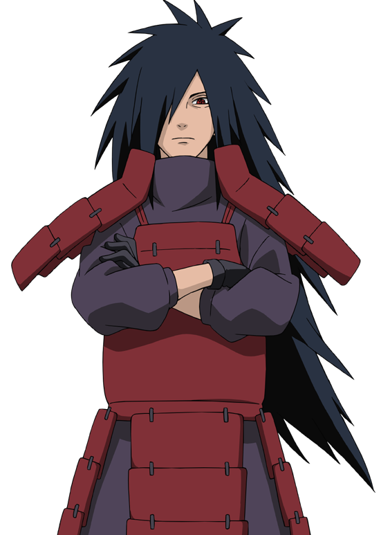

When a man learns to love, he must bear the risk of hatred
Madara Uchiha Biography
 Before the era of ninja villages, Madara was considered one of the most gifted members of the Uchiha clan alongside his younger brother Izuna Uchiha. Madara also competed with Izuna as training. Even by his clan's standards, Madara's chakra was especially strong. As a child, Madara met Hashirama Senju for the first time and became rivals at skipping stones. With their first meeting cut short after discovering the body of a member of the Hagoromo clan, the two would later meet again and Madara questioned Hashirama revealed that his brother had been killed in battle. Telling Hashirama that he himself once had four brothers, the pair discussed the prospect of peace for the world. It was here that Madara was finally able to skip his rock to the other side of the river. As they grew older, Madara's rivalry with Hashirama increased, and the two would meet by the riverbank, where they would spar and talk about changing the future. On one such occasion, Hashirama brought up the prospect of creating a village where children would not be sent to war and could grow up to be strong warriors. These meetings were not to last, however, as Madara's father Tajima soon found out about the two boys meeting and planned an ambush. However, the two boys warned one another in time, and as they fled, their fathers and brothers confront one another.
After the initial scuffle, Madara and Hashirama intervened, getting between their respective families. Madara, realising that he had to chose between Hashirama and their dream or his family, regretfully decided to end his friendship with the young Senju, determined to protect his brother Izuna. Hashirama tried to make Madara reconsider, but Madara refused to let go of his anger for the Senju. He announced his full name to Hashirama, awakening his Sharingan. From then on, Madara would constantly battle Hashirama with the intent of erasing him from his past. Eventually, he and Izuna awakened the Mangekyō Sharingan. With their newly obtained power, the two brothers became the head of the clan, with Madara becoming its leader. Sometime afterwards, Madara and Izuna fought Hashirama and Tobirama, where Izuna was mortally wounded by Tobirama. Madara retreated and Izuna died from his wounds but left Madara his eyes, granting him the Eternal Mangekyō Sharingan. Madara later confronted Hashirama again with his new found ocular prowess, but nonetheless, after a day-long battle, he was finally defeated. Noting that he could not trust them any more, Madara told Hashirama that the only way to regain this trust was to either kill himself or his brother. When Hashirama resolved to kill himself, Madara stopped him, noting his courage and accepted the truce. The Senju, the Uchiha, and all the clans they had conquered came together to form the ninja village Madara and Hashirama once dreamed of together. Ultimately, it was Madara who named the village Konohagakure. Madara's relationship with Hashirama steadily became much like from their childhood, sharing their ideas and hopes. When Hashirama told Madara about the plans for the village leader, who would be known as the Hokage, he wished to give the title of Hokage to Madara.